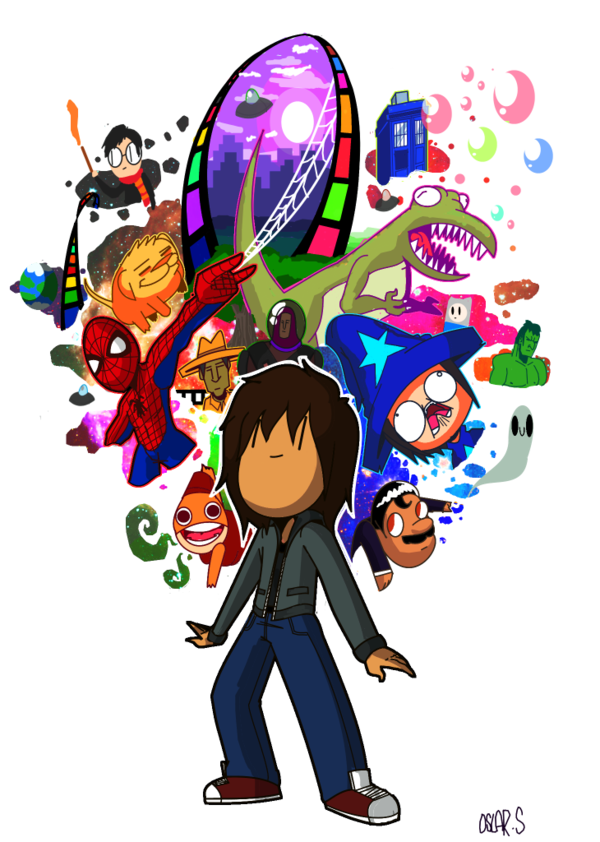
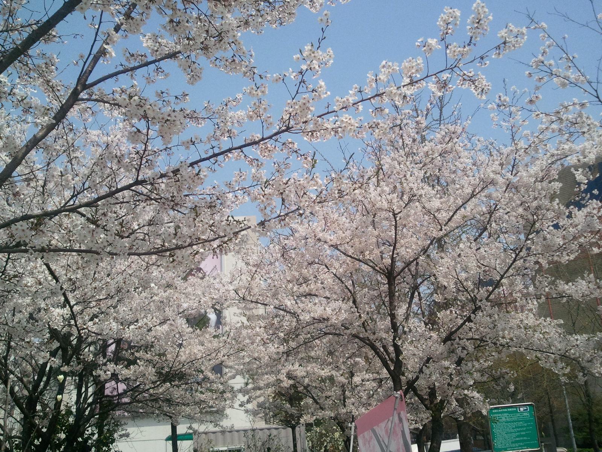

살아있음 카테고리
-
찰스 디킨스 두 도시 이야기 번역 비교
찰스 디킨스의 두 도시 이야기를 샀는데 도무지 진도가 나가지 않았다. 번역을 꼼꼼히 비교해보고 사지 않은 게 실수였다. 나름 번역이 좋다는 평가가 있길래 샀는데 내가 보기엔 이해되지 않는 글이 많아 술술 읽히지 않았다. 이미 책을 샀지만 원본과 함께 다른 번역본을 비교해서 좋은 번역이 무엇인지 확인해봤다.
-
내가 구글 행운상에 당첨됐다고?!!
아니 이런 행운이! 내가 950,000,000 영국 파운드를 받을 자격이 생겼다는 이메일이 온 거다. 내 인생 최고의 날??? 메일 내용은 다음처럼 생겼다.구글 CEO/창업자인 래리 페이지 아저씨가 나한테 직접 메일을? PDF 파일이 첨부돼 있어서 바이러스가 약간 의심됐지만 PDF 뷰어에서 차단 또는 확인해줄 것이라고 보고 열어봤다.
-
계절의 아름다움을 느낄 수 있는 곳, 물향기수목원
예전부터 물향기수목원을 가봐야지 했는데 계속 기회를 놓치다가 꽃이 피는 계절을 맞아 드디어 오늘 처음 다녀왔다. 사전에 별다른 지식을 가지고 가지 않아서인지 아주 괜찮다는 생각이 들었고 즐거운 토요일 오후를 보내고 왔다. 지금은 초봄이라 개나리, 벚꽃, 진달래, 조팝나무 등 여러 꽃이 피었는데 여름이나 가을에는 그 계절대로 또 아름다움을 느낄 수 있는 곳이지 않을까 생각되었다.

-
매력적인 만화 핀과 제이크의 어드벤처 타임
아이들이 TV를 즐겨 보게 되면서 어린이 프로그램을 같이 보는 경우가 종종 있는데 사실 어른으로서 그렇게 재밌게 보는 편은 아니다. 다만 스폰지밥이나 라바는 유머스러운 재미가 몰입도가 있기는 한데 한번 재밌게 보면 끝이었다. 하지만 최근에 핀과 제이크의 어드벤처 타임에는 꽤나 빠져버렸다. 어른들이 봐도 충분히 재미있는 매력적인 만화 핀과 제이크의 어드벤처 타임(이하 어드벤처 타임)에 대해 얘기해보려고 한다.
-
지역별 아파트 실거래가 분석
얼마 전 내 집을 장만했는데 그 과정에서 국토교통부에서 주택 실거래가를 공개하고 있다는 것을 알게 되었다. 개발자로서 정부 3.0이라든지 공공 데이터 개방에 대해 관심이 많이 있었는데 이 주택 실거래 사이트는 데이터 개방, 활용 측면에서 도저히 봐줄 사이트가 안돼 보였다. 왜 데이터를 이렇게 찾기 어렵고 받아갈 수도 없게 만들었냐고!결국 내가 직접 의미 있는 아파트 실거래가 분석을 해보기로 하고 여기 일부를 공개한다. 이 과정에서 데이터를 뽑아 오기 위한 리버스 엔지니어링이라든가(이건 개방형 데이터가 아니잖소!) 다양한 오픈 소스 소프트웨어 사용, 시행착오, 시간 투자가 있었음을 밝힌다. 이 과정이나 좀더 다양한 분석 데이터는 앞으로 차츰 올려보기로 하겠다.

-
내 집 갖기
속물처럼 들리지만 대부분의 사람들에게 사실상의 인생의 목표는 돈 벌기다. 여기서 목적과 목표를 구별한다면 목적은 여유 있게 살기 위해서, 애들을 좋은 대학에 보내기 위해서 등등 결과적으로 행복하게 살기 위해서라고 할 수는 있겠지만 직접적인 목표는 결국 우리들의 사상 속에서 돈 벌기로 귀결되고 만다. 이러한 돈 벌기의 중요한 목적 중 또 하나가 내 집 갖기, 즉 좋은 집을 내가 소유하며 사는 것이다.최근에 나 역시 좋은 집에 살아야겠다는 일념 하에 수십 집을 둘러보다가 결국 내 집을 장만하는 큰 일(?)을 벌이고 말았다. 전세 만기가 다가오는데 전셋값이 계속 오른다고 하니 이러다간 전세값, 이사 비용으로 남 좋은 일만 시킬 거 같아서 오래 살 생각으로 덜컥 집을 계약했다.

-
비올 때 걸을까? 뛸까?
장마철이라 비가 오락가락한다. 어렸을 때부터 헷갈리던 것 중 하나는 비올 때 우산이 없는 경우 걸어야 비를 덜 맞는지 뛰어야 덜 맞는지 하는 것이었다. 뛰면 앞에 있는 비를 미리 가서 더 맞는 거 같기 때문이다. 내 경우 이 궁금증이 해결된 것은 대학 때이다. 벡터를 가지고 유량이 유입되는 양에 대한 계산을 하고서야 정확히 어떤 게 유리한지 알 수 있었다.그런데 이것을 수치 계산이 아니라 21세기의 컴퓨터 기술을 활용해 시각적으로 보이면 좋지 않을까 생각이 들었다. 그래서 한번 만들어봤다. 비 맞기 시뮬레이션!

-
지하철 5호선 동영상에 대한 문의 및 답변
지하철 5호선을 타보면 출입구 위쪽 화면에서 다양한 유튜브 동영상을 볼 수 있다. 멋진 경치를 소개하기도 하고 춤도 보여주기도 하는데 간혹 내가 보기엔 좀 문제가 있다 싶은 동영상이 있어서 도시철도공사에 문의를 해봤다. 예를 들어 미국 지역별 핫도그의 차이를 보여주는 동영상이 있는데 5호선을 타는 수많은 서울 시민이 매일 봐야할 동영상일까? 다음은 내가 올린 문의 내용과 공사측 답변이다.
-
전문가들이 말하는 생산성 팁
학교 때 시간을 효율적으로 활용하는 법이라든지 공부에 집중하는 법이라든지 여러가지 생산성 팁을 본 적이 있다. 그런데 이제 직장 생활도 꽤 했으면서 생산성을 다시 한번 돌이켜보게 됐다. 매너리즘에 빠진 것은 아닌가 하고 말이다. 유명한 전문가들이 말하는 생산성 팁을 찾아보았다.
-
생각해라, 그리고 후회할 일을 해라
최근 읽은 글에 따르면 정신분열증 환자의 뇌에서는 "잡음(noise)"이 많이 발견된다고 한다. 그리고 중요한 것은 창의적인 직업군의 사람들과 그 직계 가족이 정신분열증과 같은 정신 질환이 있는 경우에 대해 높은 연관성이 있다고 한다.
 -
세월호 사고 같은 후진국형 사고는 제발 이제 그만
며칠 전 발생한 세월호 사고에 대해 추모의 마음을 밝힌다. 여러가지 생각이 있겠지만 가장 중요한 것은 한명이라도 더 살아 돌아오길 바라는 마음일 것이다. 돌아가신 분들은 부디 좋은 곳으로 갔으면 한다. 그리고 이런 후진국형 사고, 특히 인재에 의한 사고는 정말 없었으면 좋겠다. 왜 이렇게 사고가 많은 것인가. 아직도 기억나는 사고들, 삼풍백화점 사고, 대한항공 추락사고, 대구지하철 사고, 이천 냉동창고 사고, 경주 리조트 붕괴 사고...
-
성장하고 발전하는 것들은 아름답다
성장하고 발전하는 것들은 아름답다. 더하면 멋지다는 생각이 들게 된다. 반대로 정체되고 변화가 없는 것은 사람들의 관심에서 멀어지게 된다. 무슨 말인가하면 우리가 무언가에 호감을 가지는 경우 그것들은 어제보다는 오늘이, 오늘보다는 내일이 더 좋은 모습을 보여주는 경우인 것이라는 말이다. 아무리 현재는 좋은 것이라도 긍정적인 변화가 없다면 사람들은 점차 좋다는 생각을 잃게 되고 관심을 가지지 않게 된다는 말이다. 인기가 많다는 연예인들도 매번 변신을 거듭해야 살아남는 것이 그와 같은 이유다.
-
에스컬레이터에서 뛰거나 걷지 마시오
출퇴근 때 지하철을 타보면 많은 사람들이 에스컬레이터 오른편에 줄을 서있고 또 다른 사람들은 왼편에서 걸어가는 모습을 보게 된다. 바쁜 사람들은 걸어서 갈 수 있는 아름다운 배려라고 생각되는가? 사람들이 배려한다고 그러는 건 아니란 말이지!

-
멋진 휴가지 태안
여름 휴가로 태안, 안면도를 다녀왔는데 개인적으론 제주도 만큼이나 가족 휴양지로 괜찮은 것 같았다. 풍경은 아늑하고 바다는 온화하며 가는 곳마다 여행의 신선함을 느낄 수 있었다. 사진 몇 장을 올려본다.

-
세계 유명인의 머리 스타일
머리숱이 차츰 줄어들어 고민이다. 도대체 왜!? 내가 머리가 안좋은데 많이 써서 그런 건가, 야한 생각을 많이 해서인가 여러가지 생각이 들었다. 그러던 중 딜버트 만화에서 딜버트의 상사인 Pointy-haired Boss(PHB)를 보니 전형적인 대머리 아저씨인데 관료적이고 분위기 파악 안되고 부하를 몰아치는 캐릭터라는 게 눈에 들어왔다. 말하자면 머리 좋고 게으른 직장 상사와 머리 나쁘고 부지런한 직장 상사 중 후자가 대머리가 되는 경우가 많은 걸까?

-
소유냐 존재냐 - 한국말에 밴 어색한 말투
대학 때 심리학자이자 철학자인 에리히 프롬의 "소유냐 존재냐"를 읽었었다. 내용이 잘은 기억나지 않지만 사람이 무언가를 가지고 있다는 것과 무엇이 존재한다는 개념을 비교하면서 철학적인 생각을 깊게 하게 만들었던 책인 것 같다. 그런데 난 한 가지 뚜렷이 이 책을 통해 각인된 게 있다. 서양 언어에서는 무언가를 가지고 있다는 표현을 주로 하는 반면 한국어에서는 그냥 있다는 표현을 주로 한다는 것이다.
-
제이드가든과 소양댐
그 동안 애들이 작아 주로 서울에서 경기도로 놀러다녔는데 이번엔 강원도를 가봐야겠다 생각이 들어서 어제 춘천 쪽으로 향했다. 드라마에 나왔다는 제이드가든과 북한강의 대표적인 댐인 소양댐이다. 원래는 소양댐이 아니라 별로 알아보지도 않고 중도유원지라는 데를 가볼까 했는데 이런! 가보니 현재는 실체가 없는 것이다. 내비게이션으로 찍어 간 곳은 그냥 도로 한가운데였다. ㅋ 이런 낭패가. 그래서 조금 더 가서 소양댐을 가봤는데 날씨도 좋고 전망이 탁 트이는 경치가 보기 좋았다.

-
스승의 날 선물 받다
겸임 교수라고 강의를 나가지만 그 동안 전혀 그런 생각을 안하고 있었는데 나도 "선생님"이라고 생각해주는 사람이 있나 보다. 생전 처음 스승의 날이라고 선물을 받았다. 게다가 좀 나이가 든 북에서 온 학생이 준 선물이라 다른 선물과 더욱 다른 느낌이다. "허름한"† A4 용지로 싼 넥타이 선물. 내가 정말 받을 자격이 있는진 모르지만 아무튼 오늘을 기억해둬야겠다.

-
2013년 여의도 벚꽃
여의도에 드디어 벚꽃이 활짝 폈다. 2013년도 여의도 벚꽃은 참 보기가 힘들었지만 주말부터 조금씩 피더니 며칠 사이에 드디어 보기 좋게 펴서 사람들이 구경 다니기 딱 좋은 때가 됐다. 여의도 벚꽃 축제라고 축제 분위기까지는 모르겠지만 따뜻한 날씨에 사람이 많아지긴 했다. 어제, 오늘 날씨가 좋아지더니 오늘은 출근할 때부터 사람들(특히 여자들) 옷차림이 달라졌다. 어제 봄바람이 불더니 다들 봄을 타는구나. 나도 점심 때는 그냥 밥만 먹고 들어가는 건 아니다 싶어 평상시 밥먹을 땐 놓고 다니던 휴대폰을 가져와 사진을 찍어봤다. 역시 예쁘구나. 국회의사당 앞길, KBS 사잇길 등에서 찍은 사진이다.
 -
자동차박물관에서 이런 차가 좋았다
3월 초에 식구들과 자동차박물관을 찾았다. 원래는 아이들이 좋아할 것 같아서 갔는데 그렇지만은 않았다. 옛날식, 즉 구식인데도 한번씩 좋아지는 게 있다. 이런 거도 그 중 하나. Sometimes I got fascinated by old-fashioned thingies. This is one of them.